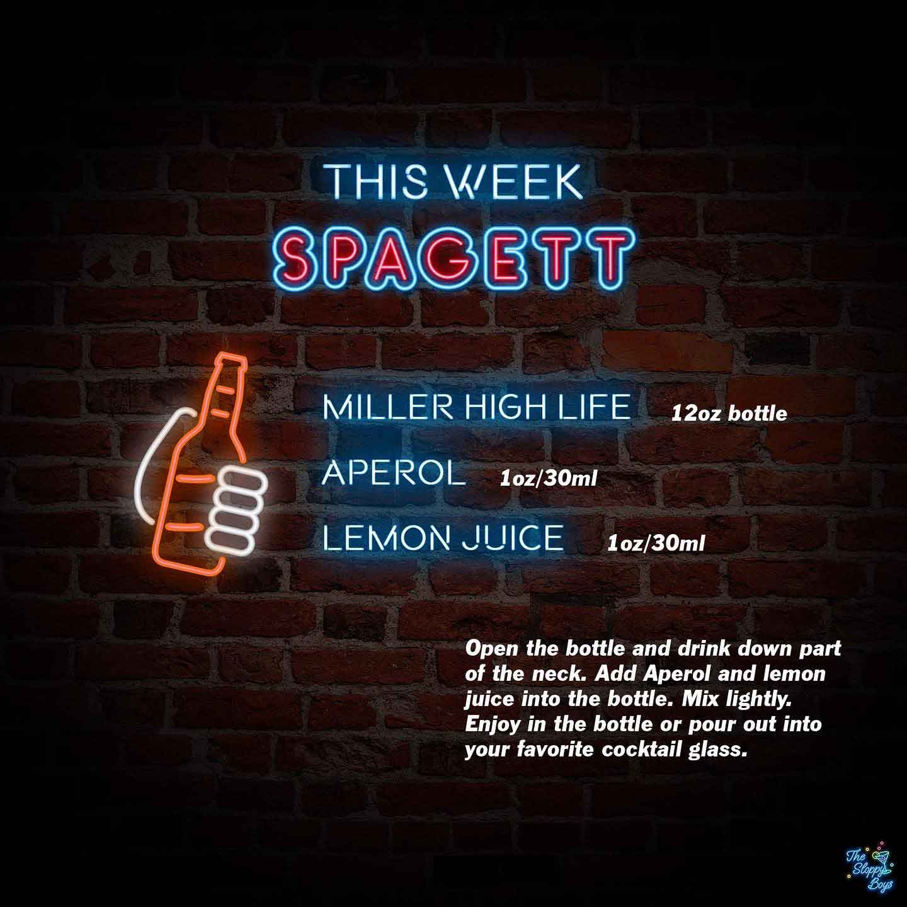

Spagett
Ingredients
- Miller High Life (12oz bottle)
- Aperol (1oz/30ml)
- Lemon Juice (1oz/30ml)
Steps
- Open the bottle and drink down part of the neck.
- Add Aperol and lemon juice into the bottle.
- Mix lightly.
- Enjoy in the bottle or pour out into your favorite cocktail glass
Notes